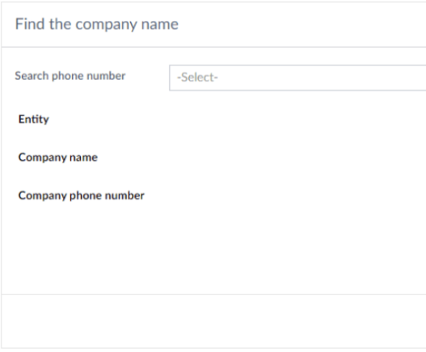

Partner company lookup
A Zoho Creator application retrieves partner-company details by phone number, replacing manual searches through a source spreadsheet.
 RG26 / Zoho Creator · Zoho Sheet
RG26 / Zoho Creator · Zoho Sheet
Zoho Creator · Zoho Sheet · Deluge · HTML & CSS
Lookup interface
Select a screenshot to enlarge it.


Enlarge screenshot- Organization
- RG26 Technologies
- My role
- Zoho Creator application development
- Evidence
- Company lookup interface
The problem
Administrators manually searched Zoho Sheet to locate partner-company information. They needed a direct lookup that returned the relevant details in a consistent format.
The approach
I imported the company data into Zoho Creator and built a lookup around phone-number selection. Selecting a number displays the matching entity, company name, and phone details in an HTML/CSS summary, while the underlying company fields remain read-only.
Implementation highlights
- Deluge workflows initialize the form and hide internal fields and default controls.
- Read-only company fields prevent edits through the lookup interface.
- A dedicated results view separates the search experience from record storage.
The outcome
Administrators can retrieve a matching company record directly instead of opening and scanning the source spreadsheet.
Project scope & source
The supplied case study describes the Creator lookup, source-data import, and read-only results. The screenshot shows the interface; no measured time savings are reported.
Source: Case Study 2 Improved, supplied by Ian Van Anthony Gutierrez.
Planning a similar project?
Discuss a project